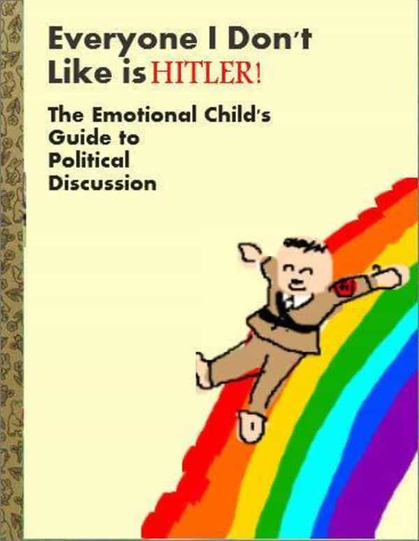
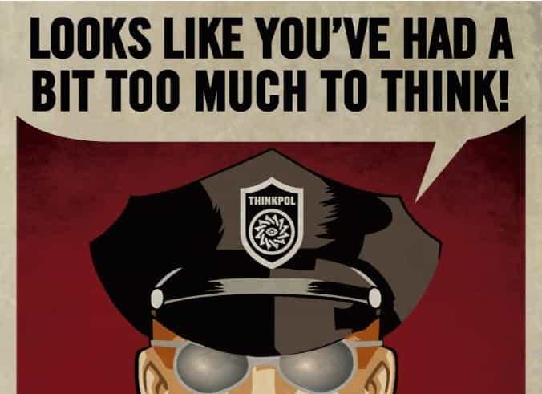

The French Government, led by Emmanuel Macron, adopted a law on the 5th of August 2017 punishing non-public “provocations, insults & slander” against those who are (or not) part of a certain group based on their supposed race, religion, gender identity, sexual orientation, etc. This unprecedented measure relies on tips that inform and extract private conversations and exchanges. If found guilty, the accused can face prison, heavy fines, or “re-education”.
Parody comes to life

This measure comes after the Night of The Digital Knives and recent crackdowns led by Western liberal governments against views that they brand as “hate speech.”
In France, the usual suspects holding the reins of power already made sure to direct their sanctions entirely against the subversive voices that dared speak their mind against the globalist narrative in public, but from now on, you are not allowed to express your opinion behind closed doors.
This motion was obviously adopted in quasi-secrecy and none of the French media reported on it. It is one the heaviest attacks on free speech ever created in the modern Western world.
A law that reflects the fragility of the liberal mind
Here is a rough English translation of the new law. There is no definition given in the text of what is “racist”, “transphobic” or “intolerant”—it will be decided by your accuser and the jury, but something tells me that heterosexual right-wing white men, being at the bottom of the “victimhood pyramid,” will be the great majority of those targeted. “Everyone I don’t like is Hitler” comes to life in the form of a decree that punishes dissenting citizens, without investigating if what they declare is the truth or not.
If you say something offensive in a private conversation, on social media, in telephone calls, or in your emails, you can be prosecuted and your life destroyed.
The law is enforced through outside tips and informers that can only come from the ones close to you. I would not be surprised if the state introduces a monetary reward system or bounties for the tips and information given to the government about “problematic elements”.
Sanctions worthy of an Orwellian regime
In addition to prison sentences, category five fines between 1500 and 3000 euros usually accompany offenses of the same type that are uttered in public. Here is the section of this law that describes the new penalties:
Art.R. 625-8-2. Persons guilty of the offences detailed in this section shall incur, in addition to the penalties already in vigour, the following additional penalties:
(1) The prohibition of applying for or carrying, for a period of not more than three years, a weapon subject to authorisation;
(2) The confiscation of one or more weapons of which the condemned is the owner or of which he has the legal access;
(3) The confiscation of the device which served or was intended to commit the offence or the item which is the product of the said device;
(4) Community service for a period of twenty to one hundred and twenty hours;
(5) The obligation to perform, if necessary at his own expense, a training course of citizenship and civility.
Your weapon, legally purchased, will be seized and you can’t apply for a permit. Your right as a citizen to legally possess a weapon is nullified because you upset someone with words.
The device used to relay the “insult” is confiscated. Phones, computer, tablets will be held by the state. It is evident that the device will be investigated for evidence of additional “hate speech.” If found, heavier charges can be made.
The citizenship training course (if it is the same one currently approved by French courts) will teach one the “republican values of tolerance and the respect of human dignity”. You will be taught the correct way to think.
That would not be a French law without double standards

The French government is taking a radical step against thought crime. Stiff measures already existed to punish dissenting wrong-think in public, but now the Rubicon is once more crossed with this law relying solely on informants, alleged accusations, broad interpretation, and subjective opinion.
Stating facts in a private conversations will be now racist, homophobic, ableist or LGBTZOZZLEOphobe. If I enter the privacy of my own home and declare “God, I wish I had an eye for every existing gender”, as I have two eyes and I am white, all the xirs and xers fluid demisexual otherkins of the neighbourhood can now drag me to court.
Obviously, this does not apply to those calling for the death of whites, exhorting their followers to use trucks of peace against pedestrians, or defend and celebrate paedophilia as a beautiful thing.
One further step towards madness
It echoes the numerous cases of vocal right-wing activists that got tried and were found guilty of hate speech in the past. Some might have heard of Boris Le Lay, a monarchist right-wing blogger from Brittany who got sentenced to six years of prison (he is still in exile) for saying that Black Celts never existed in his native Brittany (a known historical fact)
The comedian Dieudonné, whose status as a famous black person did not protect from the almighty French multiculturalists, and Jewish conservative writer and journalist Eric Zemmour both collected hefty fines for their speech.
After multiple attacks on French soil by Islamic terrorists, the priority of the state is not protecting French life but going after those who expose the lies of their narrative.
Comment s’en protéger
Delete Facebook and its useless counterparts if you have not yet done so. It is waste of time and a clever tool for the establishment to gather information on you and possibly use them against you in the future.
Use VPNs & install the browser Brave which does not track your data. The /pol/ board of 4chan lead the charge against the Google behemoth by promoting the software Adnauseam which clicks adds for you randomly and forces the company to refund advertisers. Moliere’s article is excellent on the subject of online anonymity.
If the many articles here have not convinced you of the war that is going on, I must refresh your memory. This is a cultural war. The government will not help you, and is your number one enemy. You are nothing but cattle to the elite. If you rebel and get caught, you will be dealt with and vaporised.
Get yourself in order, become bullet-proof, weight you actions, count on your brothers, do not accept the elite’s lies, and keep fighting with every breath and you might prevail.
Read more: The European Union Partners With Facebook, Google, And Twitter To Censor “Hate Speech”